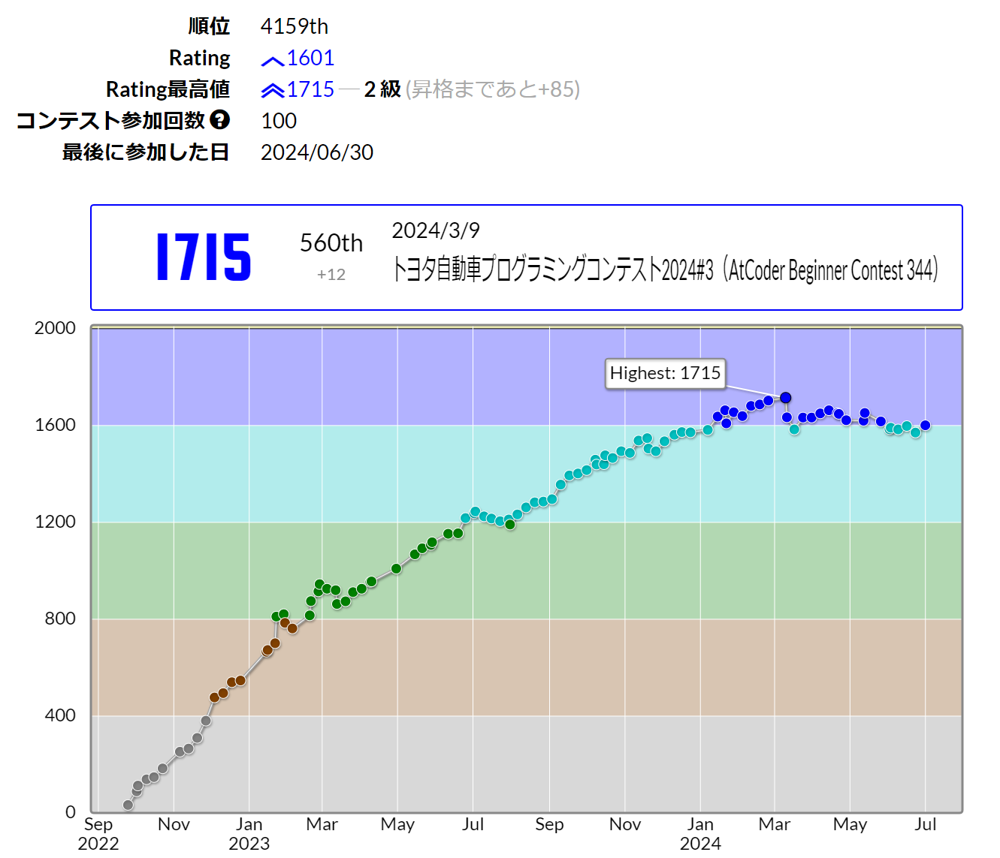
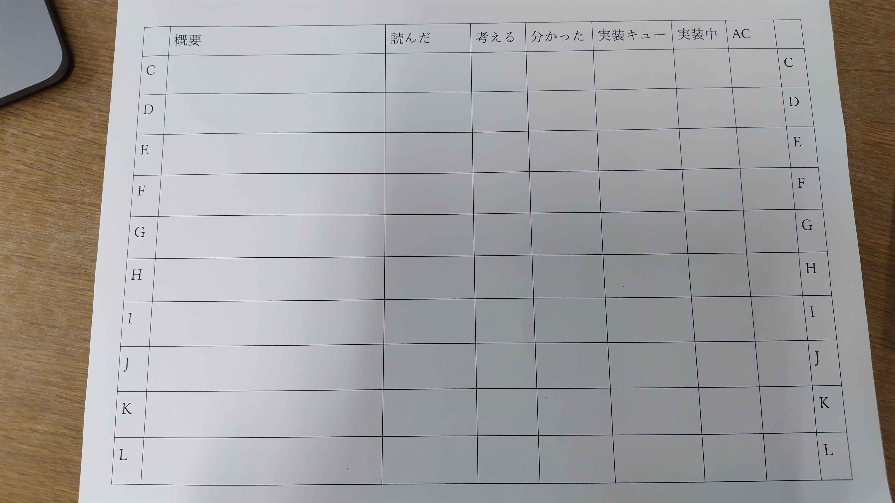
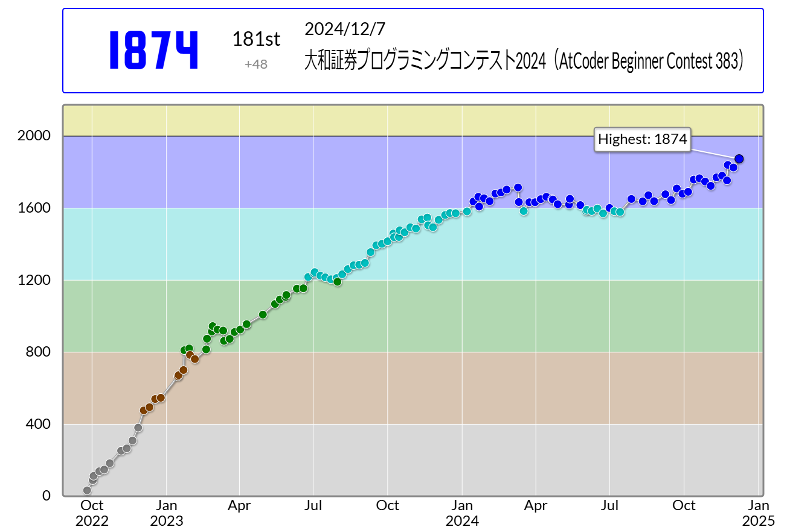

2024年のICPCを振り返る＜前編＞
目次
はじめに
昨年2024年のICPCに Anonyms として Ayuna + momoyuu + someone_ で出場しました。
2人のおかげで7月の国内予選と12月の横浜大会を勝ち抜き、2025年2月27日から開催されるplayoffに出場してきました。
この1年、楽しいこと、苦しいことがたくさんでした。
そこでそのうちのほんの一部を記録に残しておきたいと思った次第です。
前編は横浜大会までのあれこれです。
自分語りが長々と続きますがぜひお付き合いください。
コンテストからかなり期間が空いての文章の公開ですが、下書き自体はコンテスト直後に書いたものであり、読みにくいと感じた部分を加筆修正してはいますが内容はほぼそのまま公開しています。
そのせいか、私の気持ちも口調もころころ変わっていますが、当時の生えたてほやほやの気持ち、考えたことを残したいと思ったので。
チーム結成
チームを結成したときに最初に声をかけたのは私です。こんな弱い人と組んでくれてありがとう…
チームメイトは、私よりもつよつよかつ背が高いからか先輩みたいに思えてしまうが実際はかわいらしい後輩であるmomoyuuさんと、
幾度となく「え、これ典型だけど知らないの？」という言葉を浴びせつつも嬉々として私に競プロの典型を教えてくれるだれ(someone_)さんです。
私が悔しくなって勉強することまで見越して言っているようで、実際私もそれで火をつけられて勉強していた節があります。
雑務は一番レートの低い私担当ということで、まずはチーム名をたくさん考えてきて2人に選んでもらいました。
8個くらい案を出しましたが、「Anonyms」で満場一致し無事チーム名決定！
これは3人のハンドルネームに出てくる文字だけで構成されています。
「Anonymous」にするとハッカー集団になるところだったのでやめました。
一応、「Anonyms」も一般名詞として存在します。
シンプルでかっこいいですね。
チームメイト含めみんな口を揃えて「あのにます」と発音していますが、英語だと「あのにぅむす」みたいな感じです。
横浜大会では、Yes/Noおじだけがその発音でした。
さすがYes/Noおじ素晴らしい。
国内予選までの精進
momoyuuさんは黄〜橙diffくらいの問題を解くのが異様に早いし、だれさんは競プロで2年に一度出てくるのか出てこないのかレベルの謎アルゴリズムを知っていました。すごい2人。
結成後、様々なタイミングで会話をして分かったのですが、どうやら私のアドホックに問題を解く力を買ってくれたようです。
知識面については明らかに2人の方が優れているのですが、知識のあまり問われない構築やパズルのような問題であればレート以上の実力があるという自負(？)があります。
この自負もチームとして過ごしていく中で揺れ動いていましたが、褒めの言葉は遠慮なく受け取ることにします。
ということでチームでの私の主な役割は「なんか変な問題に挑戦する」でした。
インタラクティブや算数パズルが投げられてくるのでそれを解くお仕事です。要はガチャ枠。
典型問題は2人が素早く片付けてくれます。
レートの低い私が考察担当という一見謎な役割分担ですが、私は隙間産業をしているので無事(ほんとか？)成立します。
とはいえ、変な問題でも知識が必要なことはよくありますし、基礎力というものは必要です。
このレート差を埋めるべく、春はほぼ毎日精進をしました。
入黄記事を書く機会があれば具体的なことはそのときに。
そして競プロ女子部の人々に精進を監視してもらいました。
でもABCでは負けが続き水色まで落ちたこともありました。一方で、ARCだけは耐えてました。

momoyuuさんとだれさんにはたくさん問題の解説をもらいましたし、何度か精進の方法についてのアドバイスももらいました。
「7月はキャリーするから12月はキャリーしてくれ！」など応援とプレッシャーももらいました。
実際は12月もキャリーされることになりますが…
国内予選のお話
模擬国内と本番の国内予選の各問題の3人の動きはだれさんが記事にしてくれたのでそちらを読者の方には参照していただくとして、この記事ではそれ以外のところに触れようと思います。
国内予選に向けて私はガッタガタに緊張していました。
昨年も国内予選のみICPCには出場していたのですが、それ以上にガタガタ。
その様子を見ていただれさんからは「それは僕ら2人を信用していなさすぎ」という頼もしいお言葉をいただきました。
たしかにだれさんもmomoyuuさんも強いので、学内1位は間違いないのはそうなのですが、でも怖かったです。それは自分が弱いから。
3月を機にレートが落ち込み、緑diffの問題でさえも自信を持って解ける状態になく、精進をしたはずなのに成長していないのではないかと感じていたから。
ただやはり、どんなに私が不安であろうと2人が強いので横浜大会に進出するには余裕の結果でした。
15位でした。
一方で、思ったよりも何もできなかったと感じました。
E問題はまさしく私担当の構築問題ですが、色々なやり方を確かめても例外がすぐに見つかり、なかなか解くことができませんでした。
結局、momoyuuさんが力技で通してくれました。
強くなりたい。強くなりたいよ。
合宿のお話
国内予選から約2ヶ月経過し、9月のJAG合宿に3人で参加しました。
女性全然いなかったですね。
運営のOGの方との二人部屋でした。
地方から来た人もいて、顔も知らない人が大半でした。
合宿の3日間は、毎日5時間のチーム戦をします。
1日目は課題の残る結果でした。
具体的なことはほとんど忘れてしまったのですが、後の反省会で出た改善案のベースとなりました。
夜はABCに参加。
見事に冷えました。
その後振り返り、チームメイトからありがたい解説をいただきました。
2日目は有志セットで、その内だれさん作の問題が3問出題され、momoyuuさんと私もそれに協力したので観戦。
観戦だけだと飽きるので、別の3時間のセットを3人で走っていました。
ちなみにだれさん作の3問のうちの一つであるA問題は私の誤読が元ネタです。
高速ゼータ変換を学んでいて分からないところがあったので3人で通話しているときに教えてもらっていました。
そこで、ARC100-C 「Or Plus Max」を以下のように改題してこれならどうなるのかと聞いてみました。
「これは解けるよ！」と言われたので考えていたのですが、そのときになぜかこんな誤読をしてしまいました。
自分で改題しておきながら誤読をしたことについては棚に上げます。
誤読に気づいた10分後には、これをだれさんがさらに問題っぽく仕上げてくれました。
実際に出題された問題は畳み込みに見える見た目をしていますが、よく見ると累積和をとるだけのギャグ問題が完成。
人々の合宿参加記を読むと畳み込みに走りかけたチームが複数見つかりこれには思わずにっこり。
これは簡単おもしろ問題でしたが、残りのだれさん作の2問は良問でした。
2日目の夜は懇親会がありました。知り合いが少なく、声をかけるのに少しびびってしまいました。
でもせっかくの機会だからと自分からなんとか話しかけるようにしましたし、足が疲れて会場の端っこで休んでいるとわざわざ声をかけてくれる人もいて助かりました。
阪大のチームなど、関東のオンサイトではあまり会えない人々とお話ができてよかったです。
面白い大学生競プロerがいっぱいでした。またどこかで強い方々とお話できるように精進を頑張り私も強くなりたいと思いました。
懇親会が終わった後はチームメイトと集まり戦略に関する話をしていました。
各問題の進捗状況の管理、炎上した問題の共有、パソコンを利用する時間の管理など、今まではお互いが気をつかってやっていた部分が明文化されたことでコンテスト中に安心して自分の意見を言えるようになりました。
ここで、コンテスト中の問題の進捗管理を口頭ですると忘れてしまうということで、紙に表を作って管理することにしました。3日目に早速試しましたが、これが良い。「この問題誰か読んだっけ？」、「この問題はもう実装できるんだっけ？」という疑問をすぐに解消でき、実装中の人の手を止めることが減りました。

3日目はかなりうまくいきました。
3人全体の動きははっきりとは覚えていませんが、覚えている範囲で流れを書いてみます。
最初は各自が簡単な問題を片付けていきました。
これに関しては、毎度momoyuuさんの見つける速度に驚いています。私も無事、自力で解ける木DPの問題を引きました。
通した後は順位表を適宜確認しながら問題の翻訳。
ついでに、なるべく問題文の文脈を除去して簡潔になるようにしています。
2人が要約後の文章だけを見て問題を理解できることが目標です。
そして問題の言い換えもするようにしています。
競プロを直感で解きがちな私は使うライブラリを分かっていてもどう使うか分からないということがありますが、2人はライブラリの使い方をきちんと理解しています。
この日も、私が問題の言い換えを生やしたことでだれさんが「ABC-Gあたりに出そうな問題に変わった」と最終的に解いてくれました。
こんなことをしている間にmomoyuuさんが自分で読んだ問題をガンガン通してくれていました。
こうして開始1時間か2時間くらい経過した頃に、ついにインタラクティブ問題を発掘。
Ayunaさんにお任せあれ！
「あれ、クエリ回数足りなくないか？」となり色々考えましたが、結局は最初に考えたやり方をベースにしたもので事足りていました。
が、うまい実装方法が思いつかずmomoyuuさんに解き方を教えて実装してもらいました。
そのときは彼は正当性をあまり理解していなかったようですが、私があまりにも自信ありげに話すのでそれを信じてくれたみたいです。
他のチームでの練習でも彼に実装を投げたことはありますが、いつもコンテスト終了後にやっと正当性を理解してくれる感じで、実装中は私の勢いに押されているっぽい。
数回提出しましたがペナが消えなかったので他の問題にPCを譲り、私が目でデバッグ。
私はmomoyuuさんの実装ミスを疑って、momoyuuさんは私の論理ミスを疑うということをしていましたが、無事にバグを発見しAC。
最後の40分くらいは数学っぽい問題に3人で取りかかることに。
といっても、momoyuuさんが出してくれた問題の言い換えを私は理解できなかったので(ごめん)、modintのライブラリ写経をした後は全体0 ACの謎パズル問題を見ていました。
色々絵を描いたら鬼場合分けが出てきそうだと分かり諦めました…その間にチームメイトがギリギリラスト1問を通してくれました。
1日目の反省やOBの方からのアドバイスを早速活用することができました。
レート差がかなり大きいため事実として私が解けない問題は多いですしその分momoyuuさんには大きな負担がかかってしまうのですが、自分が得意なところでうまく爆発できれば橙3人のチームにも劣らない成績を残せるのだと、自信を少しだけ持つことができました。
合宿帰りは3人で回転寿司に行きました。
お茶がおいしかったです。
横浜大会に向けて
9~10月は某競プロer歓迎(？)な会社でインターンをさせていただきました。
ICPCのスポンサーであり、ICPCのポスターがオフィスの各所に貼られていました。
合宿でいい成績を残し、競プロ面について自己肯定感爆上がりしていたので、部屋の移動をするときにそれが目に入る度に、「私、横浜行けるんだ！！」と心の中でわくわくしていました。
チームでは、毎週5時間のセットを走りました。
最初は途中でボヤーっとする時間が発生することがありましたが、回数を重ねると徐々に慣れて考え続ける体力がついてきました。
最終的な実装は私でなくても、考察のキーとなる部分が私が適当につぶやいたことになっていることがあり、そのときはよっしゃ！となります。
走った後には必ず感想戦をしていて、振り返り中は私が解いた問題はいつも1、2問と少なくてごめんと毎回思っています。
5時間走り切った後は2人から解いた問題の解説がされますが、8割くらいはさっぱりよく分かっていません。
理解の速度や前提としている知識が段違いであるという現実を毎週突きつけられます。
それでも吸収できるところは頑張って吸収していく。
個人の方はどうかというと、ようやく精進の成果が出始めたのか少しずつレートを伸ばすことができ、10月にはHighestに戻りました。
11月末にはついにARCで初めての橙パフォをとり、レートも1800台に乗りました。
初橙パフォ&1800突破👏
— Ayuna (@Ayuna_gr) November 23, 2024
Ayunaさんのestie プログラミングコンテスト2024 （AtCoder Regular Contest 188）での成績：140位
パフォーマンス：2416相当
レーティング：1754→1840 (+86) :)
Highestを更新し、1 級になりました！#AtCoder #estieプログラミングコンテスト2024https://t.co/tkPK3jFta8

だれさんには「レート相応の実力がついてきたね」と言われました。
momoyuuさんには「AtCoderのレートには表れにくい強さがある」と言われていました。
昨年のkemunikuさんが同じくらいのレートだったことを考えると、自分ではレートの割に実力が足りないと思ってしまうのですが、2人のこの言葉を信じて自分はそこそこ強いのだと自信を持つことにしています。
この頃は運が良かっただけかもしれませんが、大体の考察問題において最初の方針を直感で当てられるようになってきました。
そこから細かいところまで詰めるのはまだ苦手ですが、「こういう考え方すると見通しいい気がする」と伝えると「それで行けるわ」と返ってくることがあります。
実装した後に考えの甘いところが見つかって実装がやり直しになることもあります。
ただ、知識さえ足りていれば最初のとっかかり方すら分からない問題は減りました。
多分、この辺りの時期の問題嗅ぎ分け力は高かった。
横浜大会へ！
横浜大会に向けて、学業が忙しくなりつつもなんとか力をつけてきました。
2人の安定感がすごいので、私が何もできなくてもある程度の順位までは行けるだろうと思いつつも、やはり自分が貢献して次のplayoffへ行きたいという気持ちがありました。
どうなったかは続編をお楽しみに。